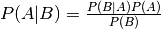

Plots in Sweave¶
R is more than a calculator. It is a full graphics environment.
%A Sweave template demonstrating plots
\documentclass[a4paper]{article}
\usepackage{amsmath,graphicx,textcomp}
\usepackage[utf8]{inputenc}
\title{Title of Document}
\author{Author Name}
\begin{document}
\maketitle
\section{Heatmap}
We show how to create a simple heatmap using generated random numbers
in R. First we generate some random numbers and some labels.
<<label=plot-data>>=
library(graphics)
N <- 10
M <- 5
mat <- matrix(rnorm(M*N), N)
rowLabels <- paste("r",1:N,sep="")
colLabels <- paste("c",1:M,sep="")
@
\noindent Then we plot.
<<label=fig1-plot>>=
pdf("example_heatmap.pdf",height=6,width=6)
hmap <- heatmap(mat, Rowv=NA, Colv=NA,main='A title',
col = heat.colors(256), scale="column",margins=c(3,3),
labCol=colLabels, labRow=rowLabels)
dev.off()
@
\begin{figure}
\begin{center}
\includegraphics[ext=.pdf,scale = 0.9]{"example_heatmap"}
\end{center}
\caption{This is the figure caption}
\end{figure}
\end{document}
Lets do a few things to this file
- Can you change the size of the matrix?
- Change some font sizes
\footnotesize{},\Large{},\small{}- Change some font properties
\textbf{},\textit{}- Add
\date{\today}to the preamble- Can you remember how to make a table?
What about math?

To make the above formula use \frac{}{}. Do yo recognize that formula?
Resources¶
Google knows all, but stackoverflow is almost as good.